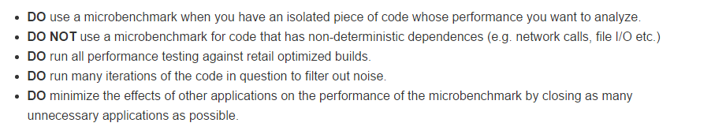
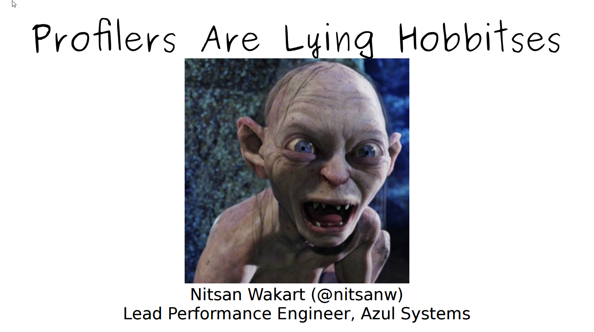
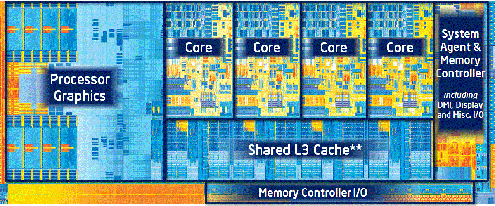

welcome
What it isn't about:
- .NET vs JVM vs C++ vs ...
- .NET is awesome!!!
- Logic optimizations/cache/db calls/etc
- GC
Agenda
Intro:
- What it's about and what isn't
- Domain field
About the Aho-Corasick algorithm
- The algorithm explained
- Implement the algorithm by ourselves
- The current implementation
Harness:
- Write micro-benchmarks
- Profile code
- Read IL & ASM code
Domain
All websites receive bot traffic.
Not all bots are bad:
- White bots (good) - search engines
- Grey bots (neutral) - crawlers
- Black bots (bad) - fraud
My User Agent:
"Mozilla/5.0 (Windows NT 6.1) AppleWebKit/537.36 (KHTML, like Gecko) Chrome/41.0.2228.0 Safari/537.36"
Google Web search UA:
"Mozilla/5.0 (compatible; Googlebot/2.1; +http://www.google.com/bot.html)"
We use it in DSP, AdServing, etc
- a string searching algorithm
- accepts a finite set of strings we want to find
- it matches all strings simultaneously
- backed by a trie
- additional "failure" collections between nodes
Efficiency vs performance
Lesson 0: First efficiency then performance
Used in grep
Harness
Microbenchmarks it's hard!

Pipeline:
A task -> C#
C# + Compiler -> IL
IL + BCL + 3rdParty -> App
App + CLR -> ASM
ASM + CPU -> Result
Infrastructure:
OS: Windows, Linux, OS X
Compilers: Legacy, Roslyn
CLR: CLR2, CLR4, CoreCLR, Mono
GC: MS, Boehm, Sgen
JIT: Legacy x86 & x64, RyuJIT
Compilation: JIT, NGen, MPGO, .NET Native
We aren't alone!!! BenchmarkDotNet for the rescue!
Demo:
- A sample benchmark
- Config
- Diagnosers
Task: create a benchmark
How does it work???
Review the sources:
- Templates
- MethodInvoker: Pilot, Idle, Warmup, Target, Clocks
- Generated project
- Results (+R plot)
Task:
x86 vs x64
RuyJIT vs LegacyJit
Profiling

Harness: Sandbox console app
Demo:dotTrace & co
Perfview
Demo: Perfview
- Time based sampling
- Memory profiling
- ETW events
Intel VTune Amplifier
- heavy metal of profilers
- $$$
- low overhead
- Languages: C, C++, C#, Fortran, Java, ASM and more.
Demo: Intel VTune Amplifier
Disassemble
Task: review the IL code
ASM code
Way to get the guts:
- Visual Studio
- WinDBG
- Intel VTune Amplifier
Task: get the guts
Optimizations
Task: find the bottleneck
Task: optimize it
Lesson 1: Know APIs
Demo: use production data
Task: write a benchmark that uses real data
Lesson 2: Use production data
Demo: Perfview & memory profiling
Demo: BenchmarkDotNet & MemoryDiagnoser
Task: Find the allocation & explain it using Perfview & ILSpy
Lesson 3: Know BCL collections and data structures
Demo: Time for a MR
Lesson 4: Know data structures
BCL is too generic and isn't suitable for high performance
Demo: Intel VTune Amplifier
Basic hotspots -> Memory access
Lesson 5: Know overheads
Demo: Intel VTune Amplifier General Exploration
how CPU works

Wikipedia knows everything
Fetch -> Decode -> Execute
Front-end & Back-end
CPU cache, branch prediction, speculative execution, and out-of-order execution
Intel i7-4770 (Haswell), 3.4 GHz
L1 Data cache = 32 KB
L1 Instruction cache = 32 KB
L2 cache = 256 KB
L3 cache = 8 MB
L1 Data Cache Latency = 4-5 cycles
L2 Cache Latency = 12 cycles
L3 Cache Latency = 36 cycles
RAM Latency = 36 cycles + 57 ns
Lesson 6: Know advanced data structures
Lesson 7: Know hacks
Lesson 8: Loop unrolling
Lesson 9: Going unsafe
"All is Fair in Love and War"
MOAR???
Optimizations based on real production load
.NET vs JVM vs C++ vs ...
In 99% cases the bottleneck is a developer not a platform